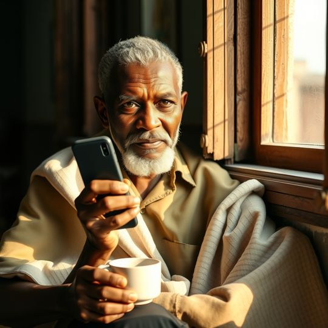

What this film is about
A son abroad asks his father what Ethiopia is. From his home in Addis Ababa, the father answers by showing what his own father once showed him: the mountains that keep the ancestors' story, a church carved from rock, the elders' wisdom under the warka tree, and the coffee ceremony that gathers the family. Then he turns to the present: his son's generation, building a new Ethiopia. He ends: wherever you go, you carry us; you carry your roots.
- Audience
- Ethiopians, especially young people and the diaspora, watching on their phones and sharing with family.
- Intent
- To feel proud of our heritage and connected to home, and reminded that however far we travel, we carry our roots with us.
- Length
- About 88 seconds, in 9:16 for phones and 16:9 for laptops and YouTube.
- Language
- Amharic narration; Amharic and English subtitles; chapters in Ge'ez numerals.
